I am a final-year Ph.D. student in xML Lab @ NUS, advised by Prof. Xinchao Wang. I received my Master's degree from HIT(SZ), supervised by Prof. Yongsheng Liang. Throughout these years, I have been fortunate to collaborate with Prof. Shuicheng Yan on 3D content generation during my PhD, and with Prof. Wanli Ouyang on visual object tracking during my Master's years.
I aim to build real-time world models and advance efficient spatial intelligence, pursuing feed-forward 3D/4D scene reconstruction and generation that operates at interactive speed and scales to open-world content.
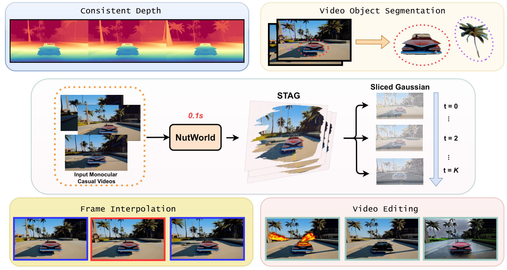
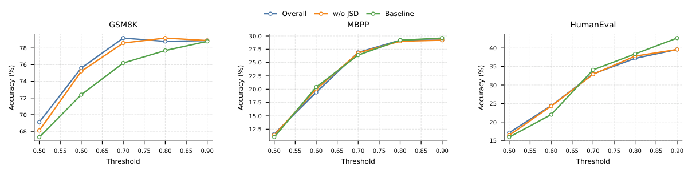
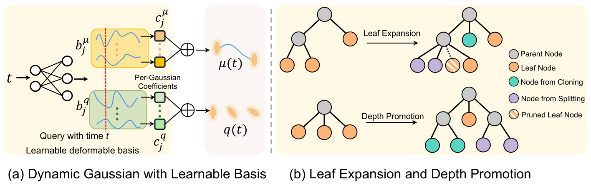
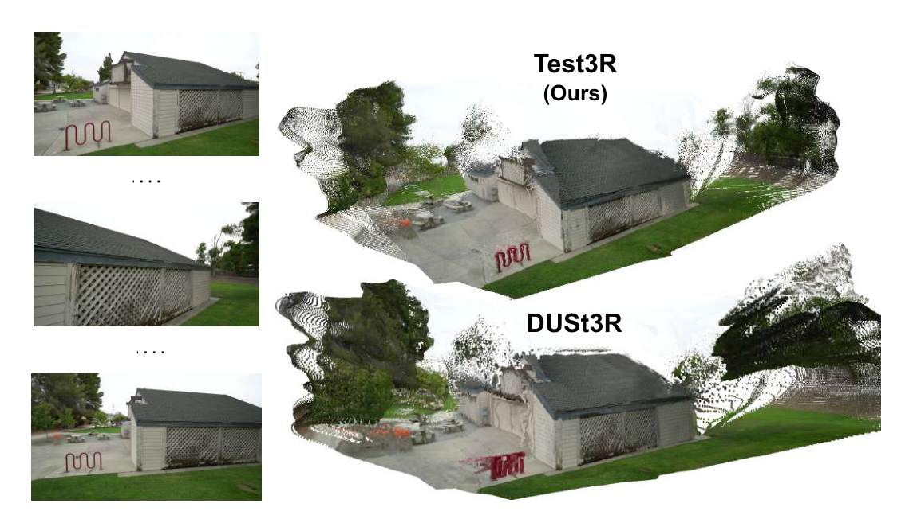
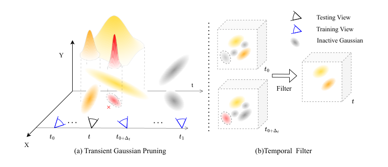
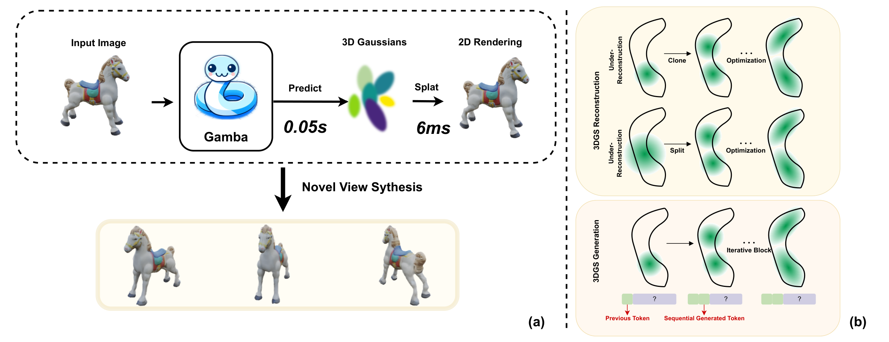
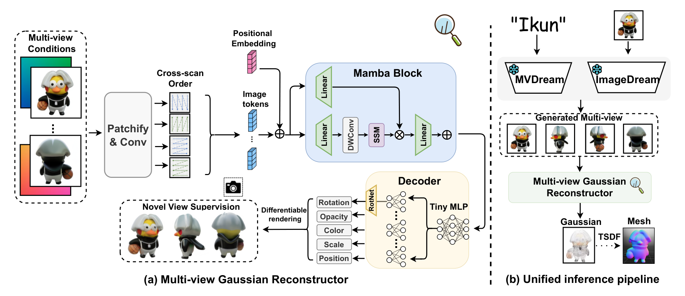
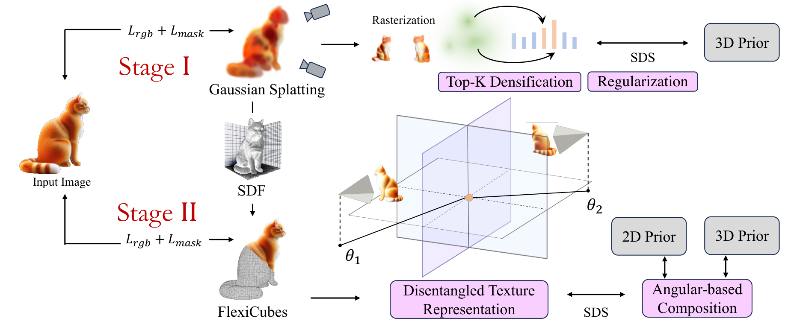
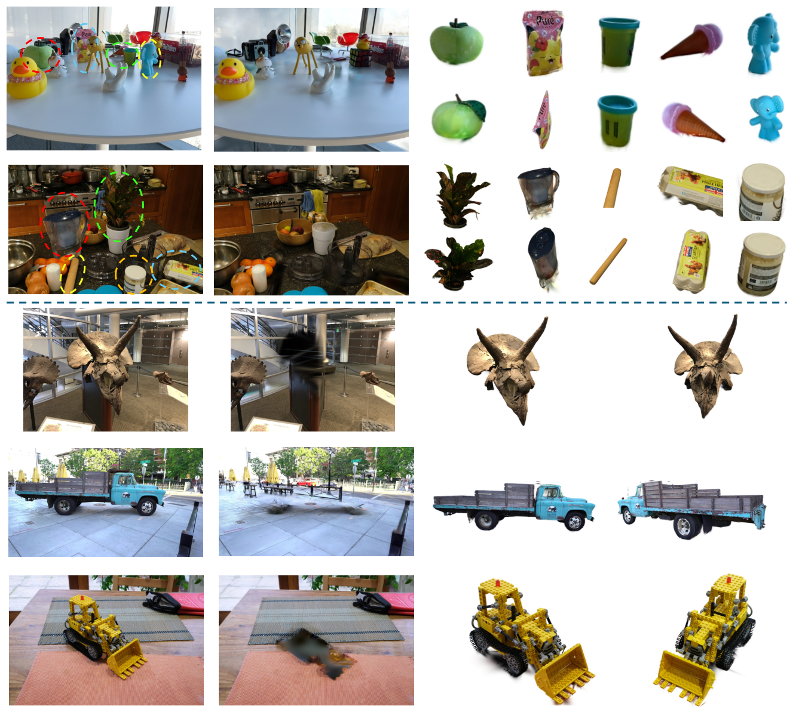
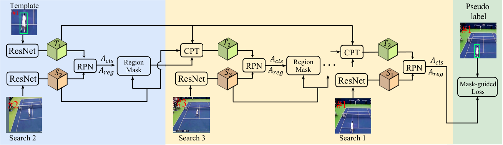
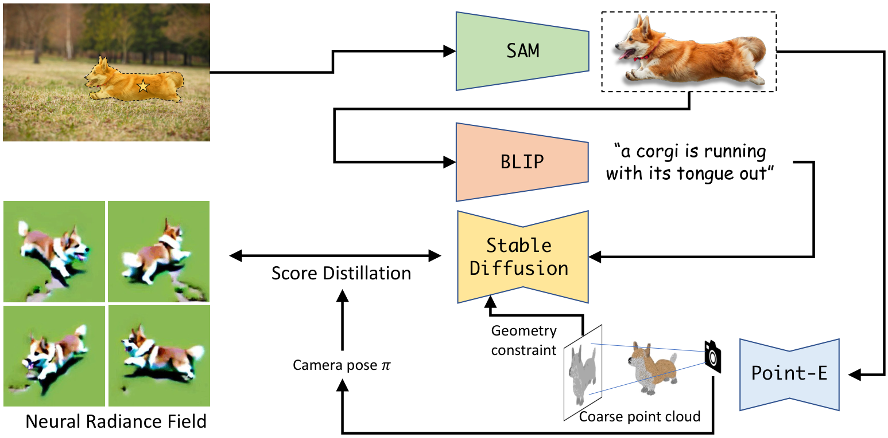
Conference Reviewer: CVPR / ECCV / ICCV / BMVC / ICLR / NeurIPS / ICML / AAAI
Journal Reviewer: TIP / TVCG / TCSVT / JVCI / CVIU